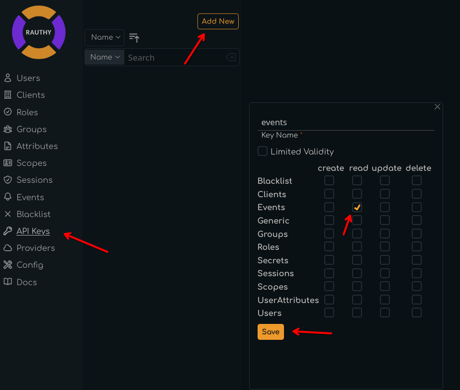

Logging and Auditing
Rauthy logs most things into the console, depending on the configuration of different log levels. In
addition, more
important events can be sent to Matrix, Slack or via E-Mail. All of this is highly configurable and
you should be able
to achieve whatever you need. All events are logged into the console as well with their configured
level. This means,
if Rauthy fires an event of type NewUser with the level info and you have configured a log level
of at least the
same, you will see the event in the console as well. So you could only use log aggregation and use
existing tools
without configuring other targets and still catch everything.
Logging
You can configure not only different levels for logging, but also different targets / situations.
LOG_LEVEL
The LOG_LEVEL variable configures the default logging in most situations. This defines the logging
for instance
for logging information from different function runs or things that have been triggered.
[logging]
# This is the log level for stdout logs
# Accepts: error, warn, info, debug, trace
#
# default: 'info'
# overwritten by: LOG_LEVEL
level = 'info'
LOG_LEVEL_DATABASE
The Hiqlite database logging is at the time of writing pretty verbose on purpose. The whole persistence layer with the Raft cluster setup has been written from the ground up. The amount of logging will be reduced in later versions, when the whole layer has been proven to be really solid, but for now you get more information just in case you need to debug something.
You can reduce the default logging and for instance set it to warn or error only.
[logging]
# The log level for the `Hiqlite` persistence layer.
# At the time of writing, only the cache will use `hiqlite`
#
# default: info
# overwritten by: LOG_LEVEL_DATABASE
level_database = 'info'
LOG_LEVEL_ACCESS
For changing the logging behavior for access logs to the API endpoints, you will need to set the
LOG_LEVEL_ACCESS.
If you have access logging configured at your firewall or reverse proxy, you can disable the
LOG_LEVEL_ACCESS fully
to reduce duplicated log outputs.
[logging]
# This is a special config which allows the configuration of
# customized access logs. These logs will be logged with each
# request in addition to the normal LOG_LEVEL logs.
# The following values are valid:
# - `debug`
# CAUTION: The Debug setting logs every information available
# to the middleware which includes SENSITIVE HEADERS
# DO NOT use the Debug level in a working production environment!
# - `verbose`
# Verbose logging without headers - generates huge outputs
# - `basic`
# Logs access to all endpoints apart from the Frontend ones which
# all js, css, ...
# - `modifying`
# Logs only requests to modifying endpoints and skips all GET
# - `off`
#
# default: 'modifying'
# overwritten by: LOG_LEVEL_ACCESS
level_access = 'modifying'
LOG_FMT
Rauthy can output logs as JSON data with the following variable:
[logging]
# You can change the log output format to JSON, if you set:
# `log_fmt=json`.
# Keep in mind, that some logs will include escaped values,
# for instance when `Text` already logs a JSON in debug level.
# Some other logs like an Event for instance will be formatted
# as Text anyway. If you need to auto-parse events, please consider
# using an API token and listen ot them actively.
#
# default: text
# overwritten by: LOG_FMT
log_fmt = 'json'
Events
Events are used for auditing and never miss anything. If something important happens, you usually need to inspect logs to catch it, but why should you, if you did not notice any problems? This is where Rauthy Events are helping you out. You need to set up basic configuration for Event targets and then you could customize the different levels.
Basic Setup
Rauthy has the following Event targets built-in:
- Matrix
- Slack
You can see the full set of config option in the [events] in the Reference Config.
To be able to receive Events via E-Mail, you need to have set up an SMTP server and have a working
connection. With
a working SMTP, you only need to set events.email, that's it.
[events]
# The E-Mail address event notifications should be sent to.
#
# overwritten by: EVENT_EMAIL
email = 'admin@localhost'
Matrix
Matrix is often deployed with home servers that may not even have real TLS certificates or if just running behind closed doors, may use self-signed certificates. To make it work in all of these situations, you can configure quite a lot for the connection to Matrix. In the end, you will only need to have some credentials and a room ID, so Rauthy knows where it should post the events.
[events]
# Matrix variables for event notifications.
# `matrix_user_id` and `matrix_room_id` are mandatory.
# Depending on your Matrix setup, additionally one of
# `matrix_access_token` or `matrix_user_password` is needed.
#
# If you log in to Matrix with User + Password, you may use
# `matrix_user_password`. If you log in via OIDC SSO (or just
# want to use a session token you can revoke), you should
# provide `matrix_access_token`.
# If both are given, the `matrix_access_token` will be preferred.
#
# If left empty, no messages will not be sent to Matrix.
# Format: `@<user_id>:<server address>`
#
# overwritten by: EVENT_MATRIX_USER_ID
matrix_user_id = ''
# Format: `!<random string>:<server address>`
# overwritten by: EVENT_MATRIX_ROOM_ID
matrix_room_id = ''
# overwritten by: EVENT_MATRIX_ACCESS_TOKEN
matrix_access_token = ''
# overwritten by: EVENT_MATRIX_USER_PASSWORD
matrix_user_password = ''
# URL of your Matrix server.
# default: https://matrix.org
# overwritten by: EVENT_MATRIX_SERVER_URL
matrix_server_url = 'https://matrix.org'
# Optional path to a PEM Root CA certificate file for the
# Matrix client.
#
# overwritten by: EVENT_MATRIX_ROOT_CA_PATH
matrix_root_ca_path = 'tls/root.cert.pem'
# May be set to disable the TLS validation for the Matrix
# client.
#
# default: false
# overwritten by: EVENT_MATRIX_DANGER_DISABLE_TLS_VALIDATION
matrix_danger_disable_tls_validation = false
# The default behavior is, that Rauthy will panic at startup
# if it cannot connect to a configured Matrix server. The
# reason is that event notifications cannot be dropped silently.
#
# However, if you use a self-hosted Matrix server which uses
# Rauthy as its OIDC provider and both instances went offline,
# you will have a chicken-and-egg problem:
# - Rauthy cannot connect to Matrix and will panic
# - Your Matrix server cannot connect to Rauthy and will panic
# To solve this issue, you can temporarily set this value to
# 'true' and revert back, after the system is online again.
#
# default: false
# overwritten by: EVENT_MATRIX_ERROR_NO_PANIC
matrix_error_no_panic = false
I suggest that you create a separate room for these events. If you experience issues with Matrix encryption, you should maybe disbale the encryption for the Events room. I came across some weird errors from Matrix in the past when I was using a session token which has been created on another machine.
Slack
To receive messages via Slack, you need to create a legacy webhook inside your Slack account. This is then the only config variable you need to set:
[events]
# The Webhook for Slack Notifications.
# If left empty, no messages will be sent to Slack.
#
# overwritten by: EVENT_SLACK_WEBHOOK
slack_webhook = ""
Custom Target
If you need your events to be sent somewhere custom, you can always create an API key with read
access for Events.
Then write a small app that simply listens to the events stream, which can process or just forwards
the events to where
ever you need them.
- Log in to the Admin UI and create an API key with
readaccess for events.

- Save the key, expand the new entry, navigate to
SecretandGenerate New

- Copy the new Secret from the hidden input that will appear.
You will also see 2 prepared
curlstatements to test your new API key. From the test, you should get an output similar to this:
{
"name": "events",
"created": 1720428190,
"expires": null,
"access": [
{
"group": "Events",
"access_rights": [
"read"
]
}
]
}
- Listen to the events stream.
You need to add the API key in the
Authorizationheader with the prefixAPI-Key, for instance like
Authorization: API-Key events$SUcpBxcPmfwH9z1Kb4ExOUYDSXpxOj9mFLadjuQ1049XaWzdWB328aa97k2nj21E
You can either periodically fetch via the /auth/v1/events endpoint (see Swagger documentation in
the Admin UI), or
by listening to the /auth/v1/events/stream, which will be a Server Sent Events stream.
The events will be sent in JSON format and have the following content:
#![allow(unused)] fn main() { struct Event { pub id: String, pub timestamp: i64, pub level: EventLevel, pub typ: EventType, pub ip: Option<String>, pub data: Option<i64>, pub text: Option<String>, } // the `EventLevel`s will be converted to lower case enum EventLevel { Info, Notice, Warning, Critical, } enum EventType { InvalidLogins, IpBlacklisted, IpBlacklistRemoved, JwksRotated, NewUserRegistered, NewRauthyAdmin, NewRauthyVersion, PossibleBruteForce, RauthyStarted, RauthyHealthy, RauthyUnhealthy, SecretsMigrated, UserEmailChange, UserPasswordReset, Test, BackchannelLogoutFailed, ScimTaskFailed, ForcedLogout, UserLoginRevoke, SuspiciousApiScan, LoginNewLocation, TokenIssued, } }
Keep in mind, that depending on proxies you might have in between, they might kill your connection to the events stream after some timeout without messages. Your app should work around this and either re-connect on connection loss, or you could fix it with a different proxy config or keep alive messages.
Testing
You can test your Event handler / pipeline setup when you log in to the Admin UI and simply press
the Test button
in the upper right corner in the Events sidebar. This will send a Test event to all configured
targets and listeners
independent of any configured event level restrictions. Test events will always be sent as long as
everything is working
properly.
EVENT_NOTIFY_LEVEL
You can set different levels for each target. By default, Only events with warning or higher are
sent via E-Mail
while Matrix / Slack would receive Events with notice or higher. If you want a different behavior,
you can get this:
[events]
# The notification level for events. Works the same way as
# a logging level. For instance: 'notice' means send out a
# notifications for all events with the notice level or higher.
# Possible values:
# - info
# - notice
# - warning
# - critical
#
# default: 'warning'
# overwritten by: EVENT_NOTIFY_LEVEL_EMAIL
notify_level_email = 'warning'
# default: 'notice'
# overwritten by: EVENT_NOTIFY_LEVEL_MATRIX
notify_level_matrix = 'notice'
# default: 'notice'
# overwritten by: EVENT_NOTIFY_LEVEL_SLACK
notify_level_slack = 'notice'
Event Persistence
Rauthys Admin UI has a component for inspecting Events from the past for analytical purposes. By
default, events with
the level info or higher are persisted for 31 days. After this period, they will be removed from
the database to
keep it clean.
You can configure both the level which should be persisted, for instance set "only persist Events with level warning or higher" and the days how long they should be kept.
[events]
# Define the level from which on events should be persisted
# inside the database. All events with a lower level will be
# lost, if there is no active event subscriber.
# Possible values:
# - info
# - notice
# - warning
# - critical
#
# default: 'info'
# overwritten by: EVENT_PERSIST_LEVEL
persist_level = 'info'
# Define the number of days when events should be cleaned
# up from the database.
#
# default: 30
# overwritten by: EVENT_CLEANUP_DAYS
cleanup_days = 30
level_* Values
There are a lot of values starting with level_*. These can be used to configure the level for
different kinds
of event being fired by Rauthy.
For instance, let's say you only want to receive events with a level of warning or higher, but you
also want to
receive a notification when there are more than 7 failed logins from an IP. By default, 7 failed
logins would trigger an
event with the level of notice. You can then set
[events]
# default: notice
# overwritten by: EVENT_LEVEL_FAILED_LOGINS_7
level_failed_logins_7 = 'notice'
to also receive these while still only receiving warning events.
The full list of these configurable levels is the following:
[events]
# The level for the generated Event after a backchannel
# logout has failed after exceeding all retries.
#
# default: critical
# overwritten by: EVENT_LEVEL_BACKCHANNEL_LOGOUT_FAILED
level_backchannel_logout_failed = 'critical'
# The level for the generated Event after a user was
# force-logged-out by an admin.
#
# default: notice
# overwritten by: EVENT_LEVEL_FORCE_LOGOUT
level_force_logout = 'notice'
# The level for the generated Event after an IP has
# been blacklisted
#
# default: warning
# overwritten by: EVENT_LEVEL_IP_BLACKLISTED
level_ip_blacklisted = 'warning'
# The level for the generated Event after the JWKS has
# been rotated
#
# default: notice
# overwritten by: EVENT_LEVEL_JWKS_ROTATE
level_jwks_rotate = 'notice'
# The level for the generated Event after a login from
# a new location for a user.
#
# default: notice
# overwritten by: EVENT_LEVEL_NEW_LOGIN_LOCATION
level_new_login_location = 'notice'
# The level for the generated Event after a new user has
# been registered.
#
# default: info
# overwritten by: EVENT_LEVEL_NEW_USER
level_new_user = 'info'
# The level for the generated Event after a user has
# changed his E-Mail
#
# default: notice
# overwritten by: EVENT_LEVEL_USER_EMAIL_CHANGE
level_user_email_change = 'notice'
# The level for the generated Event after a user has
# reset its password
#
# default: notice
# overwritten by: EVENT_LEVEL_USER_PASSWORD_RESET
level_user_password_reset = 'notice'
# The level for the generated Event after a user has
# been given the 'rauthy_admin' role
#
# default: notice
# overwritten by: EVENT_LEVEL_RAUTHY_ADMIN
level_rauthy_admin = 'notice'
# The level for the generated Event after a Rauthy
# entered a healthy state (again)
#
# default: notice
# overwritten by: EVENT_LEVEL_RAUTHY_HEALTHY
level_rauthy_healthy = 'notice'
# The level for the generated Event after a Rauthy
# instance has been started
#
# default: info
# overwritten by: EVENT_LEVEL_RAUTHY_START
level_rauthy_start = 'info'
# The level for the generated Event after a Rauthy
# entered an unhealthy state
#
# default: critical
# overwritten by: EVENT_LEVEL_RAUTHY_UNHEALTHY
level_rauthy_unhealthy = 'critical'
# The level for the generated Event after a new App
# version has been found
#
# default: notice
# overwritten by: EVENT_LEVEL_RAUTHY_VERSION
level_rauthy_version = 'notice'
# The level for the generated Event after DB secrets
# have been migrated to a new key
#
# default: notice
# overwritten by: EVENT_LEVEL_SECRETS_MIGRATED
level_secrets_migrated = 'notice'
# The level for the generated Event after a user revoked
# an illegal login with the link from the notification
# E-Mail for "login from unknown location"
#
# default: warning
# overwritten by: EVENT_LEVEL_USER_LOGIN_REVOKE
level_user_login_revoke = 'warning'
# The level for the generated Event after a SCIM
# update task ultimately failed after exceeding
# all retries.
#
# default: critical
# overwritten by: EVENT_LEVEL_SCIM_TASK_FAILED
level_scim_task_failed = 'critical'
# The level for the generated Event after Rauthy
# detected a suspicious API scanning request.
#
# default: notice
# overwritten by: EVENT_LEVEL_SUSPICIOUS_REQUEST
level_suspicious_request = 'notice'
# The level for the generated Event after a new JWT
# Token was issued.
#
# default: info
# overwritten by: EVENT_LEVEL_TOKEN_ISSUED
level_token_issued = 'info'
# The level for the generated Event after certain
# amounts of false logins from an IP
#
# default: critical
# overwritten by: EVENT_LEVEL_FAILED_LOGINS_25
level_failed_logins_25 = 'critical'
# default: critical
# overwritten by: EVENT_LEVEL_FAILED_LOGINS_20
level_failed_logins_20 = 'critical'
# default: warning
# overwritten by: EVENT_LEVEL_FAILED_LOGINS_15
level_failed_logins_15 = 'warning'
# default: warning
# overwritten by: EVENT_LEVEL_FAILED_LOGINS_10
level_failed_logins_10 = 'warning'
# default: notice
# overwritten by: EVENT_LEVEL_FAILED_LOGINS_7
level_failed_logins_7 = 'notice'
# default: info
# overwritten by: EVENT_LEVEL_FAILED_LOGIN
level_failed_login = 'info'